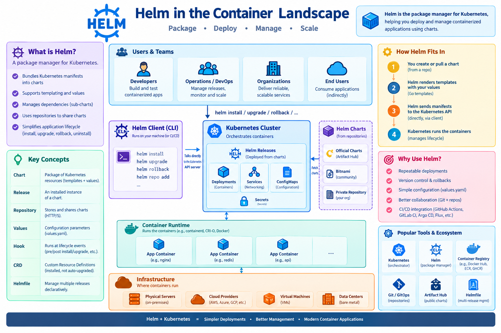

Helm
Learning Objectives
By the end of this guide, you will be able to: - Understand the purpose of a package manager in the Kubernetes ecosystem. - Differentiate between Helm Charts, Values, and Releases. - Install, upgrade, and rollback applications using Helm. - Create and customize your own basic Helm Chart. - Evaluate the trade-offs between Helm's templating and other configuration management methods. - Implement Helm hooks for custom deployment lifecycle management. - Manage sensitive data in Helm charts using secrets management tools. - Orchestrate complex applications using Helm dependencies (Umbrella Charts).
This Helm guide that covers installation, core concepts, hands‑on chart creation, repository management, best‑practices, and troubleshooting.
1. What is Helm?
| Feature | Description |
|---|---|
| Package manager for Kubernetes | Helm bundles a set of Kubernetes resources (YAML) into a Chart that can be versioned and shared. |
| Declarative releases | A Release is an instantiated Chart with a specific set of values applied to a target cluster. |
| Templating engine | Uses Go‑template syntax ({{ .Values.foo }}) to render manifests at install/upgrade time. |
| Dependency management | Charts can declare other charts as sub‑charts, similar to npm / pip dependencies. |
| Repository ecosystem | Public (e.g., Artifact Hub) and private repos host thousands of ready‑made charts. |
Tip
Helm is to Kubernetes what apt/yum is to Linux: a single source of truth for “how to run X”.
{kind=link}

2. Why Use Helm?
| Use‑case | Helm advantage |
|---|---|
| Repeatable deployments | One command (helm install) provisions a full stack (Deployments, Services, ConfigMaps, etc.). |
| Version control | Charts are versioned (1.2.3); you can roll back (helm rollback). |
| Parameterisation | End‑users only need to edit a small values.yaml instead of dozens of manifests. |
| Team collaboration | Charts live in Git, can be reviewed via PRs, and are consumed identically across dev / prod clusters. |
| CI/CD integration | Helm integrates smoothly with GitHub Actions, GitLab CI, Jenkins, Argo CD, Flux, etc. |
3. Install Helm (Client‑side)
| OS | Command |
|---|---|
| Linux (binary) | bash curl https://raw.githubusercontent.com/helm/helm/main/scripts/get-helm-3 | bash |
| macOS (Homebrew) | brew install helm |
| Windows (Chocolatey) | choco install kubernetes-helm |
| Docker (no host install) | docker run --rm -it -v $HOME/.kube:/root/.kube alpine/helm:3.14.0 version |
Tip
Verify: helm version should output something like v3.14.0+....
Configure a Kubernetes Context (if not already)
# Example: using a GKE cluster
gcloud container clusters get-credentials my‑cluster --region us-central1
# Verify connection
kubectl get nodes
4. Helm Architecture & Core Concepts
graph LR
cli3["Helm CLI (client) v3"] -->|talks directly to| kube["Kubernetes API Server"]Terminology
| Term | Meaning |
|---|---|
| Chart | A directory (or packaged .tgz) containing Chart.yaml, values.yaml, templates/, and optional charts/ (sub‑charts). |
| Release | A deployed instance of a chart (e.g., my‑app‑prod). |
| Repository | HTTP(S) server that stores packaged charts (index.yaml). |
| Values | Configurable parameters (values.yaml) that get rendered into templates. |
| Hook | Special manifest executed at lifecycle events (pre‑install, post‑upgrade, etc.). |
| CRD | Custom Resource Definition – Helm can install them but does not upgrade them automatically. |
| Helmfile | Declarative wrapper to manage multiple releases with a single file. |
5. Basic Helm Commands Cheat‑Sheet
| Command | Description | Example |
|---|---|---|
helm repo add <name> <url> |
Add a chart repo | helm repo add bitnami https://charts.bitnami.com/bitnami |
helm repo update |
Refresh local index.yaml cache |
helm repo update |
helm search repo <keyword> |
Search charts in added repos | helm search repo redis |
helm install <release> <chart> [flags] |
Deploy a new release | helm install my‑redis bitnami/redis --set auth.password=Secret123 |
helm upgrade <release> <chart> [flags] |
Upgrade an existing release | helm upgrade my‑redis bitnami/redis --set replicaCount=3 |
helm rollback <release> [revision] |
Roll back to a previous revision | helm rollback my‑redis 2 |
helm uninstall <release> |
Delete a release (removes all resources) | helm uninstall my‑redis |
helm list |
List all releases in current namespace | helm list -A |
helm get values <release> |
Show the values used for a release | helm get values my‑redis -a |
helm template <chart> |
Render chart locally (no install) | helm template my‑chart ./my‑chart |
helm lint <chart> |
Validate chart structure & templates | helm lint ./my‑chart |
helm package <chart> |
Package a chart directory into .tgz |
helm package ./my‑chart |
helm repo index . |
Generate an index.yaml for a local repo directory |
helm repo index ./repo |
helm dependency update |
Pull sub‑chart dependencies defined in Chart.yaml |
helm dependency update ./my‑chart |
6. Creating Your First Chart – “Hello‑World” Web App
61. Scaffold a New Chart
The scaffold creates:
hello-world/
├─ .helmignore
├─ Chart.yaml
├─ values.yaml
├─ charts/ # sub‑charts go here
└─ templates/
├─ deployment.yaml
├─ service.yaml
├─ ingress.yaml
└─ _helpers.tpl
62. Edit Chart.yaml
apiVersion: v2 # Helm 3 uses v2 charts
name: hello-world
description: A minimal Helm chart for a static web page
type: application
version: 0.1.0
appVersion: "1.0"
63. Define Runtime Values (values.yaml)
replicaCount: 2
image:
repository: nginx
tag: "1.25-alpine"
pullPolicy: IfNotPresent
service:
type: ClusterIP
port: 80
ingress:
enabled: false # set true to expose via Ingress
className: ""
annotations: {}
hosts:
- host: chart-example.local
paths:
- path: /
pathType: ImplementationSpecific
tls: [] # e.g., - secretName: chart-example-tls
resources: {}
nodeSelector: {}
tolerations: []
affinity: {}
64. Templating – templates/deployment.yaml
apiVersion: apps/v1
kind: Deployment
metadata:
name: {{ include "hello-world.fullname" . }}
labels:
{{- include "hello-world.labels" . | nindent 4 }}
spec:
replicas: {{ .Values.replicaCount }}
selector:
matchLabels:
{{- include "hello-world.selectorLabels" . | nindent 6 }}
template:
metadata:
labels:
{{- include "hello-world.selectorLabels" . | nindent 8 }}
spec:
containers:
- name: {{ .Chart.Name }}
image: "{{ .Values.image.repository }}:{{ .Values.image.tag }}"
imagePullPolicy: {{ .Values.image.pullPolicy }}
ports:
- containerPort: 80
resources:
{{- toYaml .Values.resources | nindent 12 }}
(No need to modify the rest – the scaffold already injects the right helpers.)
65. Render Locally (no cluster)
You should see fully‑rendered Kubernetes manifests printed to STDOUT.
66. Deploy to a Cluster
helm install hello ./hello-world \
--namespace demo --create-namespace \
--set replicaCount=3 \
--set service.type=LoadBalancer
Verify
67. Upgrade Example – Enable Ingress
helm upgrade hello ./hello-world \
--set ingress.enabled=true \
--set ingress.hosts[0].host=hello.example.com
68. Rollback
69. Clean‑up
7. Packaging & Publishing a Chart Repository
71. Package the Chart
72. Create a Simple Static Repo (GitHub Pages)
- Create a Git repo (e.g.,
my-charts). - Push the
.tgzfile to the repository root (or acharts/sub‑folder). - Generate
index.yaml:
helm repo index . --url https://<username>.github.io/my-charts
git add .
git commit -m "Add hello‑world chart"
git push origin main
- Enable GitHub Pages → Source:
mainbranch →/ (root).
The repo URL becomeshttps://<username>.github.io/my-charts.
73. Consume the Repo
helm repo add myrepo https://<username>.github.io/my-charts
helm repo update
helm search repo hello-world
helm install my-app myrepo/hello-world
Private repos – Use an authenticated HTTP server (e.g., Nexus, ChartMuseum) or Helm’s
--username/--passwordflags.
8. Using Helm in a CI/CD Pipeline (GitHub Actions Example)
name: Deploy Helm Chart
on:
push:
branches: [ main ]
jobs:
deploy:
runs-on: ubuntu-latest
steps:
- name: Checkout repo
uses: actions/checkout@v4
- name: Set up K8s (kubeconfig)
uses: azure/setup-kubectl@v3
with:
version: 'v1.28.0'
- name: Install Helm
run: |
curl https://raw.githubusercontent.com/helm/helm/main/scripts/get-helm-3 | bash
- name: Helm lint
run: helm lint ./chart
- name: Helm upgrade/install
env:
KUBECONFIG: ${{ secrets.KUBE_CONFIG }}
run: |
helm repo add myrepo https://example.com/charts
helm upgrade --install my-app ./chart \
--namespace prod --create-namespace \
--set image.tag=${{ github.sha }}
Key points:
- Use
helm lintas a gate. helm upgrade --installis idempotent.- Pass the commit SHA as image tag for traceability.
9. Advanced Topics
| Feature | What it solves | Quick example |
|---|---|---|
| Values hierarchy | Merge defaults, values.yaml, --set, -f files, and chart defaults. |
helm install -f prod.yaml -f extra.yaml |
| Sub‑charts | Share common components (e.g., PostgreSQL) across many applications. | charts/postgresql/ inside main chart; parent can override postgresql.enabled |
| Helm Hooks | Run Jobs before/after install/upgrade (e.g., DB migrations). | yaml metadata: annotations: "helm.sh/hook": pre-upgrade |
| CRDs | Package Custom Resource Definitions (CRDs) separate from normal templates. | crds/ folder; Helm installs them once on first install. |
| Helmfile | Declarative multi‑release management (like a docker‑compose for Helm). |
helmfile.yaml → helmfile sync |
| Helm Diff Plugin | Show diff between current release and upcoming upgrade. | helm plugin install https://github.com/databus23/helm-diff |
| Helm Secrets | Encrypt secret values (sops + helm-secrets). |
helm secrets upgrade … -f secret.yaml.enc |
| Using OCI Registries | Store charts in Docker/OCI registries (helm push). |
helm push mychart-0.1.0.tgz oci://registry.example.com/charts |
Best‑Practice Checklist
| Checklist Item | Why it matters |
|---|---|
| Pin chart and application versions | Guarantees reproducible releases (appVersion, chart.version). |
Keep Secrets out of values.yaml |
Use external secret managers (SealedSecrets, External Secrets, Helm Secrets). |
Validate with helm lint & helm template --debug |
Catches syntax errors before applying to a cluster. |
Use --atomic on CI installs |
Guarantees rollback on failure (helm install --atomic). |
| Store releases in a dedicated namespace | Prevents accidental cross‑namespace deletions. |
| Provide a README in each chart repo – list required values, defaults, and known limitations. | |
Version your repo (helm repo index) after each chart change. |
|
Avoid mutable tags (latest) in values.yaml; pin exact image tag digest. |
|
Test upgrades – bump minor version and run helm upgrade --dry-run. |
|
| Limit chart size – keep templates under 100 KB each for readability. | |
Use helm diff in PR pipelines – reviewers see exact changes. |
|
| Document hooks – clearly mark pre‑/post‑install jobs, and make them idempotent. |
11. Common Errors & How to Fix Them
| Symptom | Likely Cause | Fix |
|---|---|---|
Error: no kind “Ingress” is registered |
Cluster missing the Ingress API (e.g., older K8s version). | Upgrade cluster or enable the appropriate Ingress controller CRD. |
Release "X" failed: cannot patch ... no such file or directory |
Helm tried to patch a resource that was deleted manually. | Run helm rollback X or helm uninstall X && helm install X …. |
Error: failed to download "myrepo/mychart" (hint: runninghelm repo updatemay help) |
Repo URL unreachable or index.yaml missing. |
Verify repo URL, network, and that helm repo update succeeded. |
Error: rendered manifests contain a resource that already exists |
Trying to install a chart where resources already exist (e.g., previous failed install). | Use helm upgrade --install or delete the existing resource manually. |
helm lint shows “undefined variable” |
Template references a value that isn’t defined. | Add a default in values.yaml or guard with {{- if .Values.foo }}. |
helm upgrade results in “no changes detected” but you changed values.yaml |
The values file wasn’t passed (-f) or --set overridden incorrectly. |
Ensure the right file is used; run helm get values <release> -a to verify. |
helm uninstall leaves behind PVCs |
PVCs aren’t deleted automatically (by design). | Add persistentVolumeReclaimPolicy: Delete on the PV or delete PVCs manually. |
helm template prints “{{ .Release.Name }}” literally |
The file isn’t in the templates/ directory or is named with a non‑.yaml extension. |
Move the file into templates/ and give it a .yaml suffix. |
Appendix
Hands-on Challenges
- Chart Exploration: Find a popular public chart on Artifact Hub (e.g., Redis or PostgreSQL) and install it in your local cluster.
- Value Overrides: Deploy an application using a Helm chart, but override at least three default values using a custom
my-values.yamlfile. - Lifecycle Management: Perform a successful deployment, then update a value in your chart, upgrade the release, and finally roll it back to the previous version using
helm rollback. - Custom Chart: Create your own Helm chart for a simple Nginx deployment and test it locally.
- Advanced Templating: Create a chart that uses
rangeandwithto dynamically generate multiple resources (e.g., multiple ConfigMaps) based on a list invalues.yaml. - Umbrella Charts: Build a master chart that depends on two sub-charts (e.g., Redis and a custom App) and deploy them as a single unit.
- Helm Hooks: Implement a
pre-installorpost-upgradehook to run a database migration job before the main application starts.
References & Further Reading
| Resource | Link |
|---|---|
| Official Helm Docs (v3) | https://helm.sh/docs/ |
| Chart Best Practices | https://helm.sh/docs/topics/charts/ |
| Artifact Hub (public chart repo) | https://artifacthub.io/ |
| Helm Plugins Directory | https://github.com/helm/helm-plugins |
| Helmfile | https://github.com/helmfile/helmfile |
| OCI Helm Registry Spec | https://github.com/opencontainers/distribution-spec/blob/main/spec.md |
| Helm Secrets (sops integration) | https://github.com/jkroepke/helm-secrets |
| Kubernetes Docs – Declarative Configuration | https://kubernetes.io/docs/concepts/configuration/overview/ |
Quick Start Example
helm repo add bitnami https://charts.bitnami.com/bitnami && \
helm install hello bitnami/nginx --set service.type=LoadBalancer
That single command pulls a ready-made NGINX chart, creates a LoadBalancer service, and gives you a running web server in seconds.